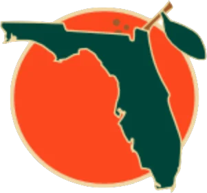

FBL · 3B
Matt Williams
CompareMilestone watch: 1,000 runs
- Team
- Orlando Juicers
- Position
- 3B
- Bats/Throws
- R/R
- Height/Weight
- 6'2", 210 lb
- Born
- Nov 28, 1965 in Bishop, CA
- Age
- 36
- Uniform
- #37
- Salary
- $2,750,000
2002 batting
| Team | Lg | G | PA | AB | R | H | 2B | 3B | HR | RBI | BB | K | SB | AVG | OBP | SLG | OPS |
|---|---|---|---|---|---|---|---|---|---|---|---|---|---|---|---|---|---|
| ORLJ | FBL | 37 | 150 | 141 | 26 | 43 | 9 | 1 | 7 | 24 | 7 | 24 | 4 | .305 | .333 | .532 | .865 |
2002 batting, advanced
| Team | Lg | PA | Pit/PA | SH | SF | HBP | IBB | GIDP | CS | OPS+ | ISO | BABIP | BB% | K% | WPA | UBR | WAR |
|---|---|---|---|---|---|---|---|---|---|---|---|---|---|---|---|---|---|
| ORLJ | FBL | 150 | 3.53 | 0 | 2 | 0 | 1 | 2 | 2 | 120 | .227 | .321 | 4.7% | 16.0% | 0.55 | -0.7 | 1.0 |
Streaks
Longest hitting streak: 6 games (Apr 10 to Apr 16); current: 5
Longest on-base streak: 6 games (Apr 10 to Apr 16); current: 5
Batting splits
| Split | G | PA | AB | R | H | 2B | 3B | HR | RBI | BB | K | SB | AVG | OBP | SLG | OPS | ISO | BABIP | BB% | K% |
|---|---|---|---|---|---|---|---|---|---|---|---|---|---|---|---|---|---|---|---|---|
| vs LHP | 14 | 40 | 37 | 8 | 12 | 3 | 0 | 3 | 11 | 3 | 6 | - | .324 | .375 | .649 | 1.024 | .324 | .321 | 7.5% | 15.0% |
| vs RHP | 32 | 110 | 104 | 18 | 31 | 6 | 1 | 4 | 13 | 4 | 18 | - | .298 | .318 | .490 | .809 | .192 | .321 | 3.6% | 16.4% |
| Home | 15 | 58 | 54 | 12 | 16 | 2 | 0 | 4 | 12 | 2 | 11 | 1 | .296 | .310 | .556 | .866 | .259 | .293 | 3.4% | 19.0% |
| Road | 22 | 92 | 87 | 14 | 27 | 7 | 1 | 3 | 12 | 5 | 13 | 3 | .310 | .348 | .517 | .865 | .207 | .338 | 5.4% | 14.1% |
By month
| Month | G | PA | AB | R | H | 2B | 3B | HR | RBI | BB | K | SB | AVG | OBP | SLG | OPS | ISO | BABIP | BB% | K% |
|---|---|---|---|---|---|---|---|---|---|---|---|---|---|---|---|---|---|---|---|---|
| April | 27 | 107 | 100 | 19 | 30 | 7 | 1 | 5 | 18 | 5 | 18 | 2 | .300 | .327 | .540 | .867 | .240 | .316 | 4.7% | 16.8% |
| May | 10 | 43 | 41 | 7 | 13 | 2 | 0 | 2 | 6 | 2 | 6 | 2 | .317 | .349 | .512 | .861 | .195 | .333 | 4.7% | 14.0% |
Situational
| Situation | PA | AB | H | 2B | 3B | HR | RBI | BB | K | AVG | OBP | SLG | OPS |
|---|---|---|---|---|---|---|---|---|---|---|---|---|---|
| Bases empty | 84 | 82 | 27 | 4 | 0 | 5 | 5 | 2 | 18 | .329 | .345 | .561 | .906 |
| Runners on | 66 | 59 | 16 | 5 | 1 | 2 | 19 | 5 | 6 | .271 | .318 | .492 | .810 |
| Runners in scoring position | 43 | 38 | 12 | 5 | 1 | 1 | 17 | 3 | 4 | .316 | .349 | .579 | .928 |
| RISP, two outs | 19 | 19 | 6 | 2 | 0 | 0 | 6 | 0 | 3 | .316 | .316 | .421 | .737 |
| Innings 1-3 | 49 | 47 | 17 | 4 | 1 | 2 | 10 | 1 | 9 | .362 | .367 | .617 | .984 |
| Innings 4-6 | 52 | 50 | 11 | 3 | 0 | 5 | 11 | 2 | 12 | .220 | .250 | .580 | .830 |
| Innings 7-9 | 49 | 44 | 15 | 2 | 0 | 0 | 3 | 4 | 3 | .341 | .388 | .386 | .774 |
Situational splits are rebuilt from every plate appearance in the export (base/out state when the PA began). "RBI" counts runs batted in on that PA.
2002 batting game log
| Date | Opp | Score | Pos | Bat | PA | AB | R | H | 2B | 3B | HR | RBI | BB | K | SB | CS | HBP | GIDP | WPA |
|---|---|---|---|---|---|---|---|---|---|---|---|---|---|---|---|---|---|---|---|
| May 12 | vsLoBa | L 4-9 | 3B | 5 | 5 | 5 | 1 | 1 | 0 | 0 | 0 | 0 | 0 | 0 | 0 | 0 | 0 | 0 | -0.095 |
| May 11 | vsLoBa | W 8-3 | 3B | 5 | 4 | 4 | 1 | 2 | 0 | 0 | 1 | 1 | 0 | 1 | 0 | 1 | 0 | 0 | 0.023 |
| May 10 | @OKC | L 5-10 | 3B | 5 | 5 | 4 | 0 | 2 | 1 | 0 | 0 | 2 | 1 | 1 | 0 | 0 | 0 | 0 | 0.211 |
| May 9 | @OKC | W 10-1 | 3B | 5 | 4 | 4 | 2 | 3 | 0 | 0 | 1 | 2 | 0 | 0 | 0 | 0 | 0 | 1 | -0.001 |
| May 8 | @OKC | L 1-3 | 3B | 5 | 4 | 4 | 0 | 1 | 0 | 0 | 0 | 0 | 0 | 1 | 0 | 0 | 0 | 0 | -0.023 |
| May 6 | @VANC | L 3-7 | 3B | 5 | 4 | 4 | 0 | 0 | 0 | 0 | 0 | 0 | 0 | 0 | 0 | 0 | 0 | 0 | -0.030 |
| May 5 | @VANC | L 2-3 | 3B | 5 | 4 | 4 | 1 | 2 | 1 | 0 | 0 | 0 | 0 | 0 | 0 | 0 | 0 | 0 | -0.003 |
| May 4 | @VANC | L 3-5 | 3B | 4 | 5 | 4 | 1 | 0 | 0 | 0 | 0 | 0 | 1 | 1 | 1 | 0 | 0 | 0 | -0.158 |
| May 3 | vsSB66 | W 5-1 | 3B | 5 | 4 | 4 | 1 | 1 | 0 | 0 | 0 | 1 | 0 | 0 | 0 | 0 | 0 | 0 | 0.041 |
| May 2 | vsSB66 | W 4-3 | 3B | 5 | 4 | 4 | 0 | 1 | 0 | 0 | 0 | 0 | 0 | 2 | 1 | 0 | 0 | 0 | -0.013 |
| Apr 30 | @ChKn | W 3-1 | 3B | 5 | 5 | 5 | 1 | 2 | 0 | 0 | 0 | 0 | 0 | 1 | 0 | 0 | 0 | 0 | 0.017 |
| Apr 29 | @ChKn | W 8-3 | 3B | 5 | 5 | 4 | 1 | 2 | 0 | 0 | 0 | 0 | 1 | 0 | 0 | 0 | 0 | 0 | 0.096 |
| Apr 28 | @ChKn | L 4-7 | 3B | 5 | 4 | 4 | 0 | 0 | 0 | 0 | 0 | 0 | 0 | 0 | 0 | 0 | 0 | 0 | -0.064 |
| Apr 27 | vsCDT | L 4-10 | 3B | 5 | 4 | 3 | 0 | 0 | 0 | 0 | 0 | 0 | 1 | 1 | 0 | 0 | 0 | 0 | -0.055 |
| Apr 26 | vsCDT | W 5-3 | 3B | 5 | 4 | 3 | 0 | 0 | 0 | 0 | 0 | 1 | 0 | 1 | 0 | 0 | 0 | 0 | -0.156 |
| Apr 25 | vsCDT | W 3-2 | 3B | 5 | 4 | 3 | 1 | 2 | 1 | 0 | 0 | 1 | 0 | 0 | 0 | 0 | 0 | 0 | 0.047 |
| Apr 23 | @HOBK | L 7-10 | 3B | 4 | 5 | 5 | 1 | 2 | 1 | 0 | 0 | 1 | 0 | 0 | 0 | 0 | 0 | 0 | 0.021 |
| Apr 22 | @HOBK | L 1-3 | 3B | 4 | 4 | 4 | 0 | 2 | 1 | 0 | 0 | 0 | 0 | 2 | 0 | 1 | 0 | 0 | 0.138 |
| Apr 21 | @HOBK | L 3-5 | 3B | 5 | 4 | 4 | 1 | 1 | 0 | 1 | 0 | 1 | 0 | 1 | 0 | 0 | 0 | 0 | 0.060 |
| Apr 19 | vsSACR | L 10-12 | 3B | 5 | 5 | 4 | 2 | 1 | 0 | 0 | 1 | 1 | 1 | 0 | 0 | 0 | 0 | 1 | -0.055 |
| Apr 18 | vsSACR | W 6-1 | 3B | 5 | 4 | 4 | 2 | 2 | 0 | 0 | 0 | 1 | 0 | 1 | 0 | 0 | 0 | 0 | 0.076 |
| Apr 17 | @ALSK | L 1-2 | 3B | 4 | 4 | 4 | 0 | 0 | 0 | 0 | 0 | 0 | 0 | 2 | 0 | 0 | 0 | 0 | -0.116 |
| Apr 16 | @ALSK | W 7-5 | 3B | 5 | 5 | 4 | 1 | 2 | 0 | 0 | 0 | 0 | 1 | 0 | 1 | 0 | 0 | 0 | 0.053 |
| Apr 15 | @ALSK | W 6-5 | 3B | 5 | 5 | 5 | 0 | 1 | 1 | 0 | 0 | 1 | 0 | 1 | 0 | 0 | 0 | 0 | 0.053 |
| Apr 14 | vsSARe | W 4-1 | 3B | 5 | 4 | 4 | 1 | 1 | 0 | 0 | 0 | 0 | 0 | 0 | 0 | 0 | 0 | 0 | -0.024 |
| Apr 13 | vsSARe | L 4-6 | 3B | 5 | 5 | 5 | 1 | 2 | 0 | 0 | 1 | 3 | 0 | 1 | 0 | 0 | 0 | 0 | 0.199 |
| Apr 12 | vsSARe | W 4-3 | 3B | 5 | 3 | 3 | 1 | 1 | 1 | 0 | 0 | 2 | 0 | 0 | 0 | 0 | 0 | 0 | 0.087 |
| Apr 10 | @HYG | L 5-10 | 3B | 5 | 4 | 3 | 1 | 1 | 0 | 0 | 1 | 1 | 1 | 1 | 0 | 0 | 0 | 0 | 0.041 |
| Apr 9 | @HYG | W 4-3 | 3B | 0 | 0 | 0 | 0 | 0 | 0 | 0 | 0 | 0 | 0 | 0 | 0 | 0 | 0 | 0.000 | |
| Apr 8 | @HYG | W 8-5 | 3B | 5 | 4 | 4 | 1 | 0 | 0 | 0 | 0 | 0 | 0 | 0 | 0 | 0 | 0 | 0 | 0.050 |
| Apr 7 | @SDG | L 6-10 | 3B | 5 | 4 | 4 | 1 | 1 | 0 | 0 | 0 | 1 | 0 | 1 | 0 | 0 | 0 | 0 | 0.060 |
| Apr 6 | @SDG | L 1-2 | 3B | 5 | 4 | 4 | 0 | 3 | 1 | 0 | 0 | 0 | 0 | 0 | 1 | 0 | 0 | 0 | 0.213 |
| Apr 5 | vsRiFS | L 0-1 | 3B | 5 | 2 | 2 | 0 | 0 | 0 | 0 | 0 | 0 | 0 | 2 | 0 | 0 | 0 | 0 | -0.053 |
| Apr 4 | vsRiFS | L 2-4 | 3B | 5 | 4 | 4 | 0 | 1 | 0 | 0 | 0 | 0 | 0 | 1 | 0 | 0 | 0 | 0 | 0.013 |
| Apr 3 | vsRiFS | L 2-10 | 3B | 5 | 2 | 2 | 1 | 1 | 0 | 0 | 1 | 1 | 0 | 1 | 0 | 0 | 0 | 0 | -0.016 |
| Apr 2 | @SaSa | L 4-13 | 3B | 5 | 5 | 5 | 1 | 1 | 0 | 0 | 1 | 2 | 0 | 0 | 0 | 0 | 0 | 0 | -0.052 |
| Apr 1 | @SaSa | L 3-6 | 3B | 5 | 4 | 4 | 1 | 1 | 1 | 0 | 0 | 1 | 0 | 1 | 0 | 0 | 0 | 0 | -0.032 |
2002 fielding by position
| Team | Lg | Pos | G | GS | Inn | TC | PO | A | E | DP | FPct | ZR | Arm | Framing | SB | CS | CS% | PB |
|---|---|---|---|---|---|---|---|---|---|---|---|---|---|---|---|---|---|---|
| ORLJ | FBL | 3B | 37 | 36 | 298.2 | 109 | 34 | 72 | 3 | 2 | .972 | 2.4 | - | - | - | - | - | - |
| ORLJ | FBL | SS | 1 | 0 | 2.0 | 1 | 0 | 1 | 0 | 0 | 1.000 | 0.0 | - | - | - | - | - | - |
ZR (zone rating), Arm and Framing are OOTP's runs-above-average figures. SB/CS/CS% are base stealers against him as a catcher.
Career batting
| Year | Team | Lvl | G | PA | AB | R | H | 2B | 3B | HR | RBI | BB | K | SB | AVG | OBP | SLG | OPS | WAR |
|---|---|---|---|---|---|---|---|---|---|---|---|---|---|---|---|---|---|---|---|
| 1986 | - | A | 68 | 280 | 250 | 32 | 60 | 14 | 3 | 7 | 29 | 24 | 51 | 3 | .240 | .311 | .404 | .715 | 1.2 |
| 1986 | - | Short-A | 4 | 19 | 17 | 3 | 4 | 0 | 1 | 1 | 3 | 1 | 4 | 0 | .235 | .263 | .529 | .793 | 0.1 |
| 1987 | SFS | Majors | 84 | 266 | 245 | 28 | 46 | 9 | 2 | 8 | 21 | 16 | 68 | 4 | .188 | .240 | .339 | .578 | -0.7 |
| 1987 | - | AAA | 56 | 235 | 211 | 36 | 61 | 15 | 2 | 6 | 37 | 19 | 53 | 6 | .289 | .345 | .464 | .809 | 0.9 |
| 1988 | SFS | Majors | 52 | 170 | 156 | 17 | 32 | 6 | 1 | 8 | 19 | 8 | 41 | 0 | .205 | .251 | .410 | .662 | 0.4 |
| 1988 | - | AAA | 82 | 324 | 306 | 45 | 83 | 19 | 1 | 12 | 51 | 13 | 56 | 6 | .271 | .299 | .458 | .757 | 0.6 |
| 1989 | SFS | Majors | 84 | 311 | 292 | 31 | 59 | 18 | 1 | 18 | 50 | 14 | 72 | 1 | .202 | .242 | .455 | .697 | 1.1 |
| 1989 | - | AAA | 76 | 320 | 284 | 61 | 91 | 20 | 2 | 26 | 61 | 32 | 51 | 9 | .320 | .394 | .680 | 1.073 | 4.0 |
| 1990 | SFS | Majors | 159 | 664 | 617 | 87 | 171 | 27 | 2 | 33 | 122 | 33 | 138 | 7 | .277 | .319 | .488 | .807 | 3.9 |
| 1991 | SFS | Majors | 157 | 635 | 589 | 72 | 158 | 24 | 5 | 34 | 98 | 33 | 128 | 5 | .268 | .310 | .499 | .809 | 4.2 |
| 1992 | SFS | Majors | 146 | 576 | 529 | 58 | 120 | 13 | 5 | 20 | 66 | 39 | 109 | 7 | .227 | .286 | .384 | .670 | 1.1 |
| 1993 | SFS | Majors | 145 | 619 | 579 | 105 | 170 | 33 | 4 | 38 | 110 | 27 | 80 | 1 | .294 | .325 | .561 | .886 | 4.6 |
| 1994 | SFS | Majors | 112 | 483 | 445 | 74 | 119 | 16 | 3 | 43 | 96 | 33 | 87 | 1 | .267 | .319 | .607 | .926 | 3.5 |
| 1995 | SFS | Majors | 76 | 318 | 283 | 53 | 95 | 17 | 1 | 23 | 65 | 30 | 58 | 2 | .336 | .399 | .647 | 1.046 | 3.7 |
| 1995 | SJC | A | 4 | 12 | 11 | 2 | 2 | 0 | 0 | 1 | 2 | 0 | 3 | 0 | .182 | .250 | .455 | .705 | 0.0 |
| 1996 | SFS | Majors | 105 | 455 | 404 | 69 | 122 | 16 | 1 | 22 | 85 | 39 | 91 | 1 | .302 | .367 | .510 | .877 | 2.8 |
| 1997 | CLE | Majors | 151 | 636 | 596 | 86 | 157 | 32 | 3 | 32 | 105 | 34 | 108 | 12 | .263 | .307 | .488 | .795 | 2.3 |
| 1998 | ARI | Majors | 135 | 557 | 510 | 72 | 136 | 26 | 1 | 20 | 71 | 43 | 102 | 5 | .267 | .327 | .439 | .766 | 2.0 |
| 1998 | VERM | AAA | 2 | 5 | 5 | 0 | 1 | 0 | 0 | 0 | 0 | 0 | 0 | 0 | .200 | .200 | .200 | .400 | -0.0 |
| 1999 | ARI | Majors | 154 | 678 | 627 | 98 | 190 | 37 | 2 | 35 | 142 | 41 | 93 | 2 | .303 | .344 | .536 | .880 | 3.7 |
| 2000 | ARI | Majors | 96 | 397 | 371 | 43 | 102 | 18 | 2 | 12 | 47 | 20 | 51 | 1 | .275 | .315 | .431 | .746 | 0.7 |
| 2000 | ElPa | AA | 5 | 15 | 13 | 3 | 6 | 2 | 0 | 0 | 1 | 2 | 1 | 0 | .462 | .533 | .615 | 1.149 | 0.3 |
| 2000 | ROSE | A | 2 | 8 | 8 | 1 | 3 | 0 | 0 | 1 | 1 | 0 | 1 | 0 | .375 | .375 | .750 | 1.125 | 0.1 |
| 2001 | ARI | Majors | 106 | 436 | 408 | 58 | 112 | 30 | 0 | 16 | 65 | 22 | 70 | 1 | .275 | .314 | .466 | .780 | 1.6 |
| 2001 | VERM | AAA | 5 | 19 | 17 | 4 | 6 | 2 | 0 | 2 | 5 | 2 | 2 | 1 | .353 | .421 | .824 | 1.245 | 0.3 |
| 2002 | ORLJ | FBL | 37 | 150 | 141 | 26 | 43 | 9 | 1 | 7 | 24 | 7 | 24 | 4 | .305 | .333 | .532 | .865 | 1.0 |
| Top level | 1799 | 7351 | 6792 | 977 | 1832 | 331 | 34 | 369 | 1186 | 439 | 1320 | 54 | .270 | .317 | .491 | .808 | 35.8 |
Seasons before 2002 are the player's real-life record, listed under the franchise that holds that history in this universe. "Top level" totals count major-league-level seasons only.
Service time & contract status
- Service time
- 12.023 (2,087 days; 43 this season)
- Status
- FA-eligible
- Arbitration
- Past arbitration (6+ years)
- Free agency
- Eligible (6+ years): can test the market when his current deal ends
- Options
- 1 used, 2 remaining (of 3)
Service time is Y.DDD: major-league service years plus days toward the next year (172 days = 1 year, from the league rules). Status follows the league rules: under 3 years Pre-Arb, 3 to 5 years Arb 1/2/3, 6+ years FA-eligible. The export's arbitration_offering is 0 and no player has gone through arbitration yet (has_received_arbitration is 0 for everyone), so these statuses come from the rules, not from hearings. Projected years assume a full major-league season of service every year from 2002 on.
Contract
| Year | Salary |
|---|---|
| 2002 | $2,750,000 |
1-year contract with Orlando Juicers.
Injury history (2002)
| Date | Expected days out | Day-to-day | Setbacks |
|---|---|---|---|
| Apr 5 | 1 | Yes | 0 |
Most frequent matchups pitchers he has faced
| Pitcher | AB | H | HR | AVG |
|---|---|---|---|---|
| Javier Vazquez | 4 | 3 | 0 | .750 |
| A.J. Burnett | 4 | 1 | 0 | .250 |
| Joe Mays | 4 | 0 | 0 | .000 |
| Stan Spencer | 3 | 2 | 0 | .667 |
| Dicky Gonzalez | 3 | 2 | 0 | .667 |
| Mike Gosling | 3 | 2 | 0 | .667 |
| Hideo Nomo | 3 | 1 | 1 | .333 |
| Mark Buehrle | 3 | 1 | 0 | .333 |
| Jason Stanford | 3 | 1 | 1 | .333 |
| Jeff Fassero | 3 | 1 | 0 | .333 |
| Rigo Beltran | 3 | 1 | 0 | .333 |
| Ryan Jensen | 3 | 1 | 0 | .333 |
| Kyle Lohse | 3 | 1 | 0 | .333 |
| Claudio Vargas | 3 | 1 | 0 | .333 |
| Roy Halladay | 3 | 1 | 0 | .333 |
In our stories 2
- All tiers April 14-21: Who Is Trending Up, Who Is Fraying Alexander Hadley
- All tiers Preseason Power Rankings: All 60 Clubs, Graded Alexander Hadley